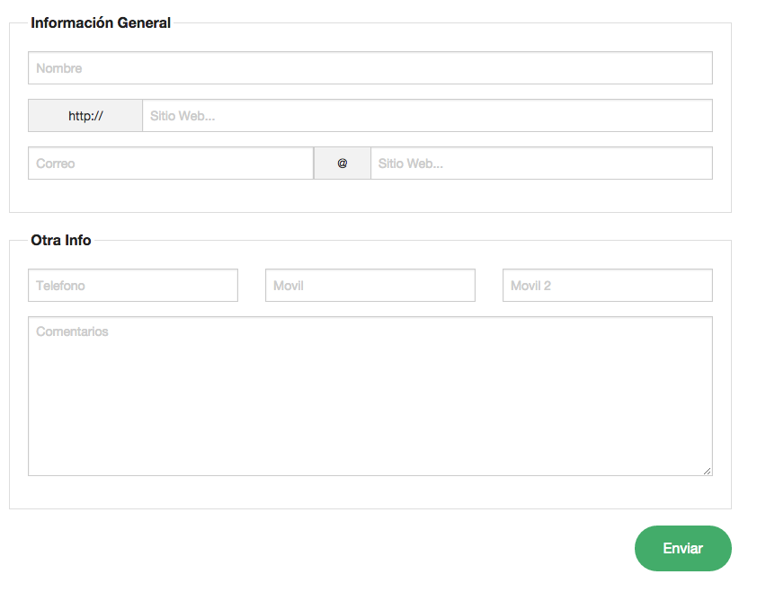
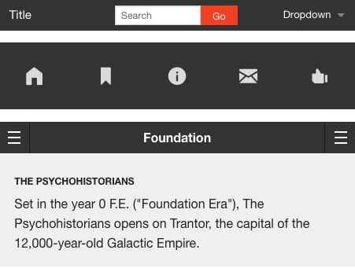
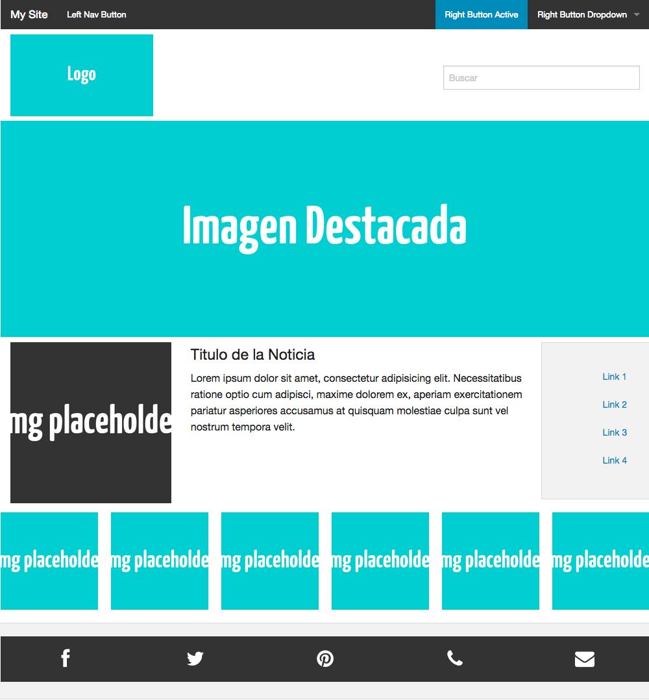
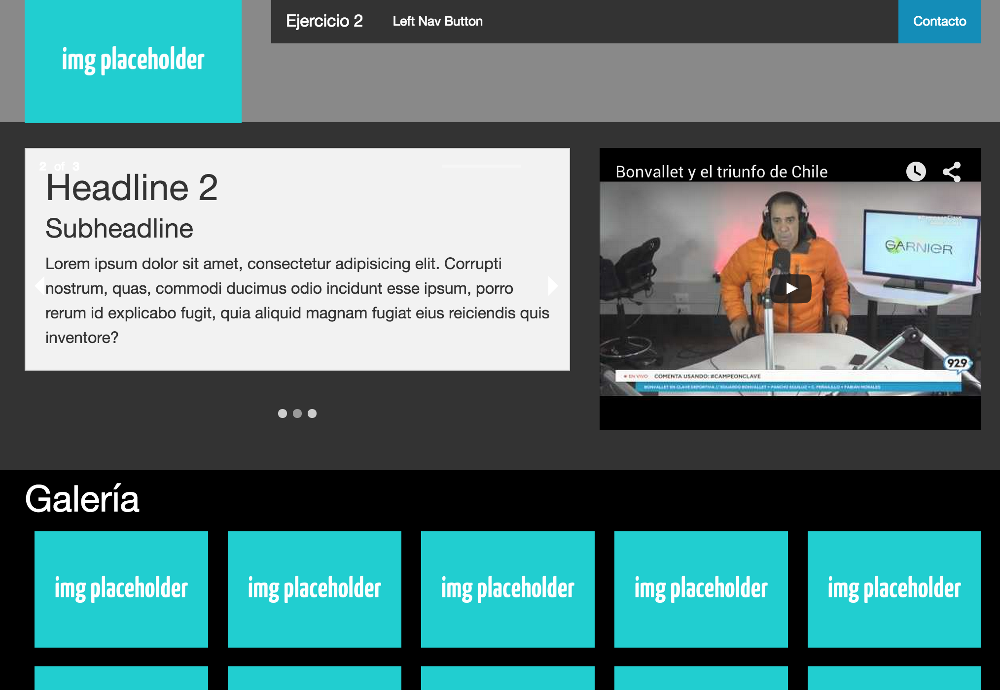

Con esta clase podemos editar el comportamiento de flotado de un elemento tanto a la izquierda (.left) o a la derecha (.right). Para usar esta propiedad, el elemento padre debe tener la clase .clearfix
<div class="panel clearfix">
<a class="button right">Float Right</a>
<a class="button left">Float Left</a>
</div>
Las clases .radius y .round permiten aplicar border-radius a un elemento.
<div class="alert-box [radius round]" data-alert>Alert<a href="#" class="close">×</a></div>
<div class="progress [radius round]">
<span class="meter" style="width:70%;"></span>
</div>
<a href="#" class="button [radius round]">Button</a>
<span class="label [radius round]">Label</span>
<span data-tooltip class="[radius round]" title="Tooltip">Tooltip</span>
Puedes cambiar la propiedad de alineación de texto añadiendo .text-lef, .text-right, .text-center o .text-justify
<p class="text-left"><!-- text goes here --></p>
<p class="text-right"><!-- text goes here --></p>
<p class="text-center"><!-- text goes here --></p>
<p class="text-justify"><!-- text goes here --></p>
Foundation incluye clases para botones. Un boton básico seria algo asi:
<a href="#" class="button">Default Button</a>
Se pueden agregar clases adicionales para modificar la forma y tamaño del boton
<a href="#" class="button tiny">Tiny Button</a>
<a href="#" class="button small">Small Button</a>
<a href="#" class="button">Default Button</a>
<a href="#" class="button disabled">Disabled Button</a>
<a href="#" class="button large">Large Button</a>
<a href="#" class="button expand">Expanded Button</a>
<!-- Radius Classes -->
<a href="#" class="button round">Round Button</a>
<a href="#" class="button radius">Radius Button</a>
Clases adicionales se pueden añadir para modifica el color
<a href="#" class="button">Default Button</a>
<a href="#" class="button success">Success Button</a>
<a href="#" class="button secondary">Secondary Button</a>
<a href="#" class="button alert">Alert Button</a>
<a href="#" class="button info">Info Button</a>
<a href="#" class="button disabled">Disabled Button</a>
Foundation permite tambien agrupar botones, utilizando la clase .button-group
<ul class="button-group">
<li><a href="#" class="button">Button 1</a></li>
<li><a href="#" class="button">Button 2</a></li>
<li><a href="#" class="button">Button 3</a></li>
</ul>
<ul class="button-group radius">
<li><a href="#" class="button">Button 1</a></li>
<li><a href="#" class="button">Button 2</a></li>
<li><a href="#" class="button">Button 3</a></li>
<li><a href="#" class="button">Button 4</a></li>
</ul>
<!-- Rounded Button Group -->
<ul class="button-group round">
<li><a href="#" class="button">Button 1</a></li>
<li><a href="#" class="button">Button 2</a></li>
<li><a href="#" class="button">Button 3</a></li>
<li><a href="#" class="button">Button 4</a></li>
</ul>
Las clases para formularios vienen preestablecidas en foundation. Además los inputs pueden tener tamaños de acuerdo a la grilla (aplicando .large-X segun el tamaño desado)
<form action="">
<div class="row">
<div class="large-12 columns">
<label>Input Label
<input type="text" placeholder="large-12.columns" />
</label>
</div>
</div>
<div class="row">
<div class="large-6 columns">
<input type="text" placeholder="large-12.columns" />
</div>
<div class="large-6 columns">
<input type="text" placeholder="large-12.columns" />
</div>
</div>
</form>
Para agregar una etiqueta a un input. Si agregamos la clase .inline a la etiqueta, esta se mostrara en linea con el input
Fieldset
A Veces necesitamos agrupar nuestros formularios categorizandolos para hacer el llenado mas facil al usuario, en foundation contamos con fieldset para este proposito
<form>
<fieldset>
<legend>Fieldset Legend</legend>
<label>Input Label
<input type="text" placeholder="Inputs and other form elements go inside...">
</label>
</fieldset>
</form>
Prefijos, etiquetas y acciones
Foundation permite añadir acciones ligadas a sus botones. Basicamente usando .row .collapse
<div class="row collapse">
<div class="small-3 large-2 columns">
<span class="prefix">http://</span>
</div>
<div class="small-9 large-10 columns">
<input type="text" placeholder="Enter your URL...">
</div>
</div>
Clases para errores
<form>
<div class="row">
<div class="large-6 columns">
<label class="error">Error
<input type="text" class="error" />
</label>
<small class="error">Invalid entry</small>
</div>
<div class="large-6 columns error">
<label>Another Error
<input type="text" />
</label>
<small class="error">Invalid entry</small>
</div>
</div>
<textarea class="error" placeholder="Message..."></textarea>
<small class="error">Invalid entry</small>
</form>
Ejercicio
Recrea el siguiente formulario en foundation

Barras de Navegación

Icon Bar
Crea una barra de navegación de iconos, al especificar el numero de items (1 a 8) se asegura de dejarlos espaciados de manera proporcional
<div class="icon-bar five-up">
<a class="item">
<img src="../assets/img/images/fi-home.svg" >
<label>Home</label>
</a>
<a class="item">
<img src="../assets/img/images/fi-bookmark.svg" >
<label>Bookmark</label>
</a>
<a class="item">
<img src="../assets/img/images/fi-info.svg" >
<label>Info</label>
</a>
<a class="item">
<img src="../assets/img/images/fi-mail.svg" >
<label>Mail</label>
</a>
<a class="item">
<img src="../assets/img/images/fi-like.svg" >
<label>Like</label>
</a>
</div>
Barra de Iconos Vertical
Agregando la clase .vertical hacemos la barra vertical
<div class="icon-bar vertical">
<a href="" class="item">
....
</a>
</div>
Con Icon Fonts
<div class="icon-bar five-up">
<a class="item">
<i class="fi-home"></i>
</a>
<a class="item">
<i class="fi-bookmark"></i>
</a>
<a class="item">
<i class="fi-info"></i>
</a>
<a class="item">
<i class="fi-mail"></i>
</a>
<a class="item">
<i class="fi-like"></i>
</a>
</div>
Top Bar
La topbar, es un menu altamente personalizable, con muchos items a personalizar
<nav class="top-bar" data-topbar role="navigation">
<ul class="title-area">
<li class="name">
<h1><a href="#">My Site</a></h1>
</li>
<!-- Remove the class "menu-icon" to get rid of menu icon. Take out "Menu" to just have icon alone -->
<li class="toggle-topbar menu-icon"><a href="#"><span>Menu</span></a></li>
</ul>
<section class="top-bar-section">
<!-- Right Nav Section -->
<ul class="right">
<li class="active"><a href="#">Right Button Active</a></li>
<li class="has-dropdown">
<a href="#">Right Button Dropdown</a>
<ul class="dropdown">
<li><a href="#">First link in dropdown</a></li>
<li class="active"><a href="#">Active link in dropdown</a></li>
</ul>
</li>
</ul>
<!-- Left Nav Section -->
<ul class="left">
<li><a href="#">Left Nav Button</a></li>
</ul>
</section>
</nav>
Podemos hacer de la barra, una barra "Sticky"
<div class="contain-to-grid sticky">
<nav class="top-bar" data-topbar role="navigation" data-options="sticky_on: large">
...
</nav>
</div>
Navegación Lateral
La navegación lateral es una lista
<ul class="side-nav">
<li><a href="#">Link 1</a></li>
<li><a href="#">Link 2</a></li>
<li><a href="#">Link 3</a></li>
<li><a href="#">Link 4</a></li>
</ul>
Ejercicio
Replica el siguiente layout con Foundation

Orbit Slider
Añadiendo interactividad, podemos encontrar un slider llamado orbit
<ul class="example-orbit" data-orbit>
<li>
<img src="../assets/img/examples/satelite-orbit.jpg" alt="slide 1" />
<div class="orbit-caption">
Caption One.
</div>
</li>
<li class="active">
<img src="../assets/img/examples/andromeda-orbit.jpg" alt="slide 2" />
<div class="orbit-caption">
Caption Two.
</div>
</li>
<li>
<img src="../assets/img/examples/launch-orbit.jpg" alt="slide 3" />
<div class="orbit-caption">
Caption Three.
</div>
</li>
</ul>
Sliders de Contenido con orbit
Orbit tambien soporta no solo imagenes, sino que contenido
<ul class="example-orbit-content" data-orbit>
<li data-orbit-slide="headline-1">
<div>
<h2>Headline 1</h2>
<h3>Subheadline</h3>
</div>
</li>
<li data-orbit-slide="headline-2">
<div>
<h2>Headline 2</h2>
<h3>Subheadline</h3>
</div>
</li>
<li data-orbit-slide="headline-3">
<div>
<h2>Headline 3</h2>
<h3>Subheadline</h3>
</div>
</li>
</ul>
Galeria de Imagenes lightbox con clearing
Clearing es un lightbox para galerias incluido en foundation
<ul class="clearing-thumbs large-block-grid-4" data-clearing>
<li><a href="path/to/your/img"><img src="path/to/your/img-th"></a></li>
<li><a href="path/to/your/img"><img src="path/to/your/img-th"></a></li>
<li><a href="path/to/your/img"><img src="path/to/your/img-th"></a></li>
</ul>
Reveal Modal
Crear dialogos modales es sencillo con foundation
<a href="#" data-reveal-id="myModal">Click Me For A Modal</a>
<div id="myModal" class="reveal-modal" data-reveal aria-labelledby="modalTitle" aria-hidden="true" role="dialog">
<h2 id="modalTitle">Awesome. I have it.</h2>
<p class="lead">Your couch. It is mine.</p>
<p>I'm a cool paragraph that lives inside of an even cooler modal. Wins!</p>
<a class="close-reveal-modal" aria-label="Close">×</a>
</div>
Flexvideo
Hacer el video responsive en Foundation también es trivial
<a href="#" data-reveal-id="myModal">Click Me For A Modal</a>
<div id="myModal" class="reveal-modal" data-reveal aria-labelledby="modalTitle" aria-hidden="true" role="dialog">
<h2 id="modalTitle">Awesome. I have it.</h2>
<p class="lead">Your couch. It is mine.</p>
<p>I'm a cool paragraph that lives inside of an even cooler modal. Wins!</p>
<a class="close-reveal-modal" aria-label="Close">×</a>
</div>
Ejercicio
Realiza el siguiente mockup
